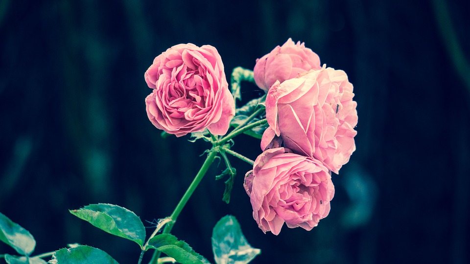
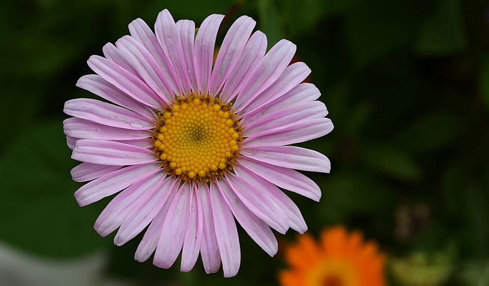
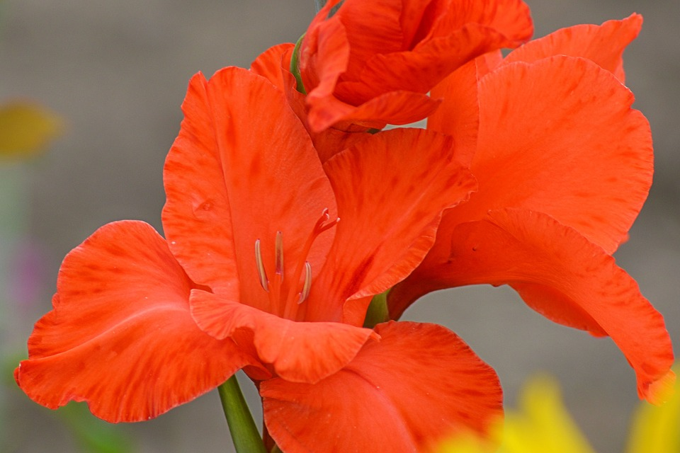
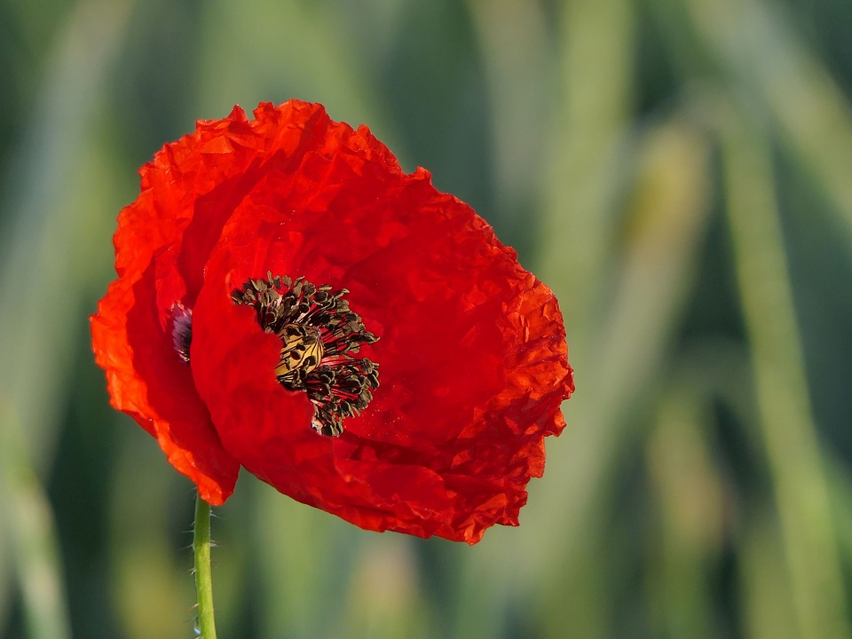
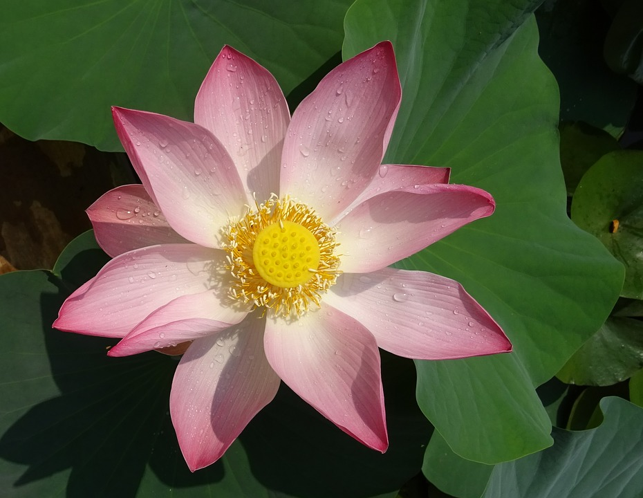
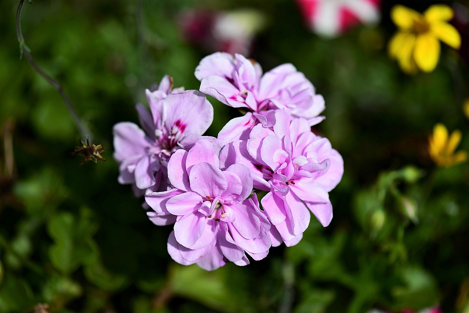
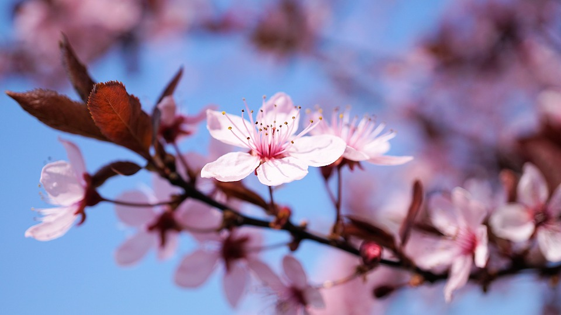

Flores
Rosa

El género Rosa está compuesto por un conocido grupo de arbustos espinosos y floridos representantes principales de la familia de las rosáceas. Se denomina rosa a la flor de los miembros de este género y rosal a la planta.
Margarita

La planta de las margaritas cuenta con un buen tamaño y pueden formar con sus tallos individuales grandes plantas. Los tallos de esta planta son alargados y además son delgados. En estos se encuentran las hojas que son alargadas y tienen como rasgo ser dentadas. Así mismo son de color verde en un tono muy oscuro. Las margaritas poseen flores de mediano tamaño las cuales poseen un centro que es en color amarillo y los pétalos pueden presentarse tanto amarillos como blancos.
Tulipan

Tulipa es un género de plantas perennes y bulbosas perteneciente a la familia Liliaceae, en el que se incluyen los populares tulipanes, nombre común con el que se designa a todas las especies, híbridos y cultivares de este género.
Clavel
El clavel o clavelina es una planta herbácea perteneciente a la familia de las Caryophyllaceae, difundida en las regiones mediterráneas. Es espontánea en la flora de la península ibérica. En su forma típica es una planta cespitosa, con numerosos vástagos de hasta 1 m de altura.
Gladiola

Gladiolus es un género de plantas perennes y bulbosas perteneciente a la familia Iridaceae. El género se distribuye en el área mediterránea europea, Asia, África tropical y Sudáfrica.
Amapola

Es una planta de ciclo anual que puede alcanzar más de 50 cm de altura. Posee tallos erectos y poco ramificados con finos pelillos. Las hojas, que nacen alternas a lo largo del tallo, sin peciolo, son pinnadas y muy dentadas en los márgenes con una única nervadura central.
Loto sagrado

Nelumbo nucifera es una de las dos especies pertenecientes al género Nelumbo. Recibe el nombre vulgar de loto sagrado o loto indio, y a veces el de rosa del Nilo. Es famosa la longevidad de sus semillas, que pueden germinar después de diez siglos.
Begonia

El género Begonia comprende alrededor de 1.500 especies, de las que alrededor de 150, además de casi 10.000 variedades e híbridos, se comercializan para su uso en jardinería. Son oriundas de las regiones tropicales y subtropicales de América, África y Asia.
Cerezos
